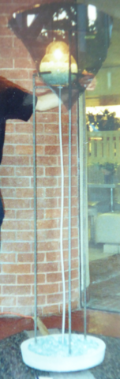

Robots
Before you get too excited let's be clear that I am not a
roboticist. I like to tinker both with technology and people, and
robots are an interesting way to do that. These robots are very
simple, and surely some will argue that they are not robots, which is
fine with me. I use the term because that's what most people would
call them.
Goals of these robots:
-
Challenge the assumption that
robotics research can only be performed
by highly trained engineers in well-equipped labs using expensive and
complex equipment and components. My robots are built out of cheap
materials and intentionally do not look too highly polished
encouraging visitors to modify them, in some cases
mechanically,in others programmatically.
-
Explore how people think robots should behave, and how people should
behave with robots
-
Explore what happens when the general public can modify
a robot, or change the robots behavior
Man or Machine

Robot with No Personality 2 (Man or Machine): Building on the "Robots
With No Personality" project from 2009, this is a human-sized robot
that can express itself in very simple ways: changing the shape of its
mouth and eyes, moving its ears, moving itself, and speaking. The
robot approaches visitors and engages in very simple conversations.
This robot is paired with a "Personality Creation Station" where other
visitors select how the robot should respond to various situations. Of
interest are the choices visitors make in choosing the robot's
responses and other visitors' reactions to the robot's behavior. This
robot is under development and needs quite a bit of work.
Telepresence

Telepresence Robot (Robonica): A very simple mobile platform, a little
less than human height, with a camera, screen, microphone, and
loudspeaker, running custom video conferencing software. The software
allows a remote viewer to "drive" the robot around, seeing what the
robot sees and hearing what the robot hears while being projected onto
the screen and loudspeaker of the robot. In this way, the remote
viewer is "projected" into a remote physical space, allowing
interaction with people there. The purpose of this project is not to
develop a telepresence robot but to encourage participant and
bystanders to make additions or modifications to the robot to see what
ideas non-roboticists might come up with. The robot is currently
broken, but the goal was to let make it available to anyone on campus
to "drive" or modify.
Desk

Concrete, steel, broken glass
Lamp

Concrete, steel, broken glass, vacuum, electronics